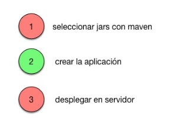
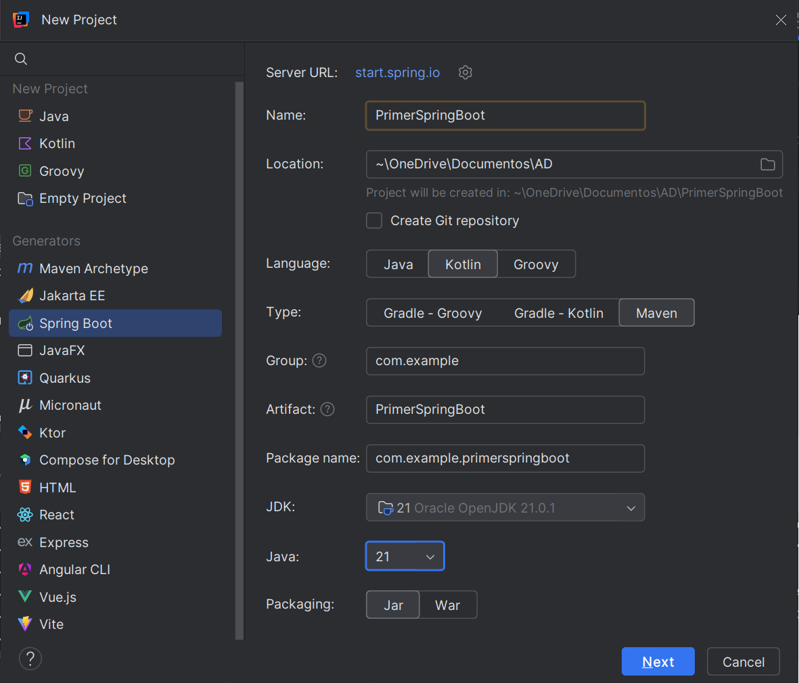
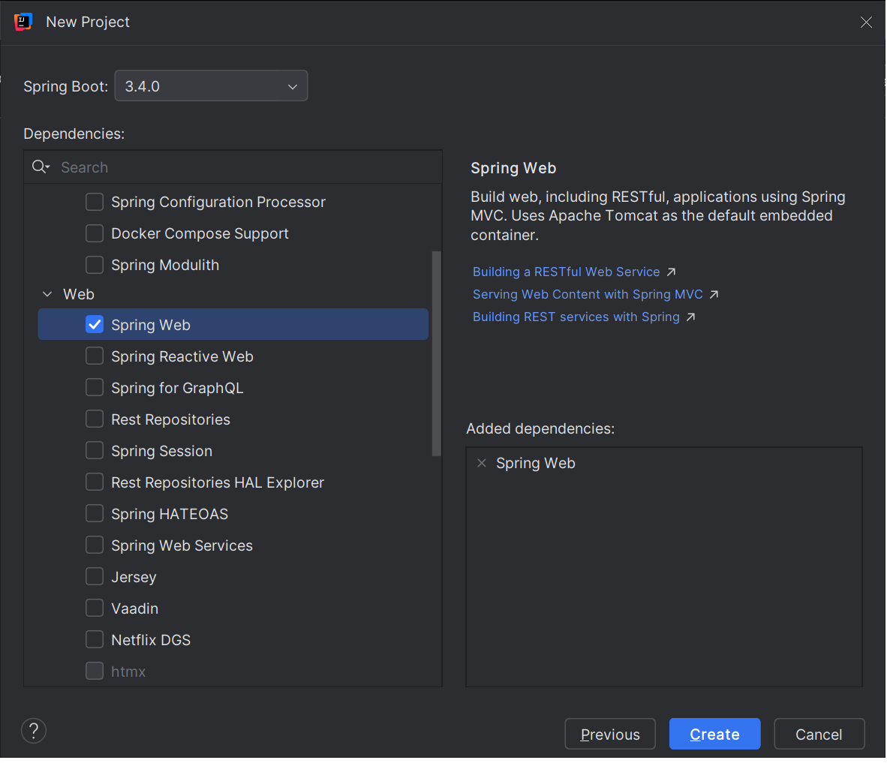
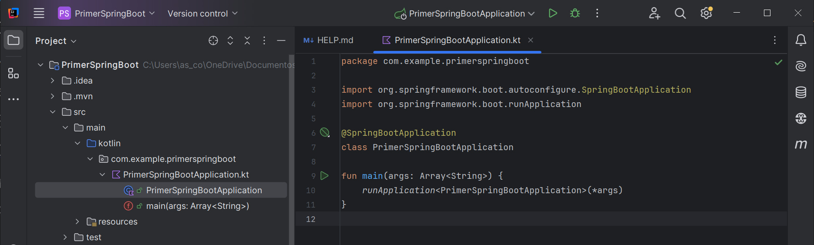
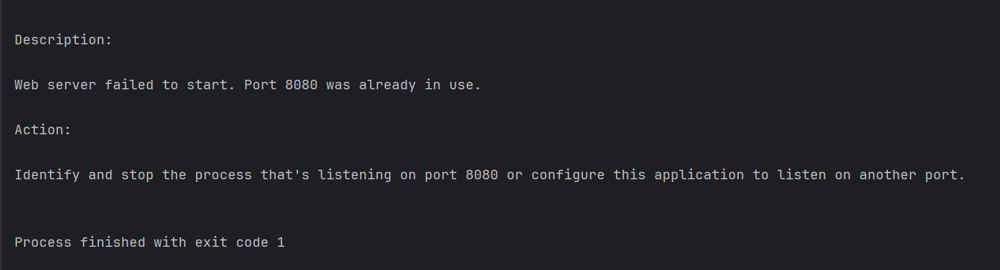
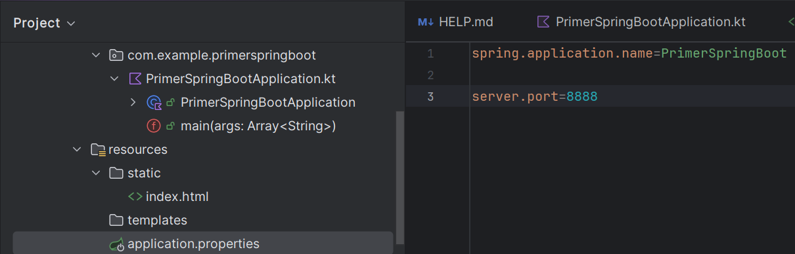
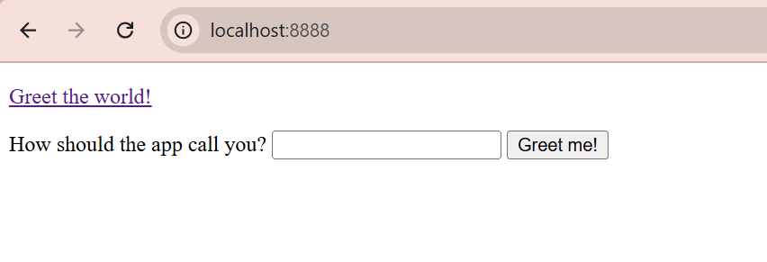
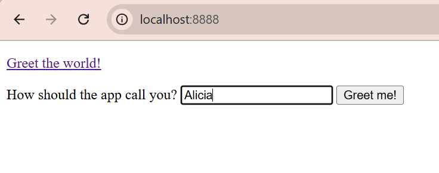
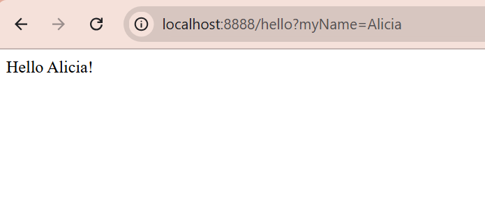

🔹Spring Boot¶
Spring es el framework completo; Spring Boot es la forma fácil y moderna de usar Spring. Tradicionalmente Spring era complicado de configurar, había que preparar servidores, XML, dependencias, etc. Spring Boot se enfoca en simplificar y acelerar el desarrollo de aplicaciones web y microservicios, ofreciendo una configuración automática y la capacidad de crear aplicaciones que se ejecutan de forma independiente sin necesidad de un servidor web externo.
Spring Boot es una capa por encima de Spring que lo hace fácil:
- configura todo automáticamente
- trae un servidor web incorporado
- evita escribir XML
- permite arrancar una app con un botón
- usa starters (dependencias ya preparadas)
- permite crear proyectos en segundos
Pasos para crear una aplicación con Spring Boot
Fundamentalmente existen tres pasos a realizar. El primero es crear un proyecto Maven/Gradle y descargar las dependencias necesarias. En segundo lugar desarrollamos la aplicación y en tercer lugar la desplegamos en un servidor. Si nos ponemos a pensar un poco a detalle en el tema, únicamente el paso dos es una tarea de desarrollo. Los otros pasos están más orientados a infraestructura.
SpringBoot nace con la intención de simplificar los pasos 1 y 3 y que nos podamos centrar en el desarrollo de nuestra aplicación. ¿Cómo funciona? El enfoque es sencillo y lo entenderemos realizando un ejemplo.
También tendrá especial importancia el archivo applicantion.properties que será donde configuraremos aspectos relativos con nuestra aplicación, tales como las conexiones a base de datos o el puerto por donde acceder a nuestra aplicación por ejemplo. También podemos ver todas las dependencias que se han añadido gracias al archivo pom.xml

🔹Ejemplo con SpringBoot¶
Para entender la filosfía de Spring lo mejor es hacer una primera aplicación sencilla. Esta aplicación consistirá en devolver un saludo al usuario a través de un navegador web. Acontinuación se detallan los pasos a seguir.
Podemos crear los proyectos Spring Boot de dos maneras:
-
Mediante una herramienta web online (https://start.spring.io/) denominada Spring Initializr, donde por medio de unos parámetros de configuración, genera automáticamente un proyecto Maven o Gradle, según elijamos, en un archivo comprimido Zip, con la estructura de la aplicación y que puede ser importada directamente desde un IDE.
-
Mediante un IDE, como Eclipse, IntelliJ...etc, teniendo instalados los plugins necesarios.
En nuestro caso crearemos un proyecto Maven de Spring Boot en IntelliJ:
Crear la aplicación y añadir dependencias
1️⃣ Creamos el proyecto y lo configuramos desde File-->New-->Project:
- Elige Spring Boot.
-
Configura las siguientes opciones:
- Language: Kotlin
- Build System: Maven
-
Especifica un nombre para el proyecto: PrimerSpringBoot
- Última versión de JDK
- Última versión de Java
2️⃣ Posteriormente seleccionamos las dependencias necesarias:
Spring Web (para el desarrollo de aplicaciones web)
3️⃣ Después de aceptar, y si todo ha ido correctamente, ya tendremos nuestro proyecto creado.
|  |  |
|---|---|
Nota
Para este proyecto solo necesitaremos la dependenica Spring Web:
- Se utiliza para desarrollar aplicaciones web, ya sea basadas en REST o tradicionales con HTML dinámico.
- Incluye un servidor web embebido (por defecto, Tomcat) para ejecutar la aplicación sin necesidad de configurarlo manualmente.
- Facilita el manejo de rutas HTTP (GET, POST, PUT, DELETE, etc.) y parámetros de solicitud a través de métodos en los controladores.
- Usa la biblioteca Jackson (incluida por defecto) para convertir automáticamente objetos Kotlin/Java a JSON y viceversa.
- Ofrece herramientas para manejar errores y excepciones de forma global mediante @ControllerAdvice o controladores personalizados.
Al iniciar nuestra aplicación, lo primero que observamos es que se crea una clase PrimerSpringBootApplication que sirve como contenedor para la configuración de la aplicación. No necesitas implementar métodos adicionales, ya que Spring Boot se encarga de todo gracias a la anotación @SpringBootApplication.

La clase está anotada con @SpringBootApplication y, runApplication, es una función de extensión proporcionada por Spring Boot para lanzar la aplicación.
@SpringBootApplication
class PrimerSpringBootApplication
fun main(args: Array<String>) {
runApplication<PrimerSpringBootApplication>(*args)
}
-
El tipo genérico
<PrimerSpringBootApplication>indica que ésta es la clase principal de la aplicación que contiene la anotación @SpringBootApplication. -
*args pasa los argumentos de la línea de comandos a la aplicación. Se utiliza para descomponer un array (como Array
<String>) en argumentos individuales, lo que es necesario para pasar los parámetros de la línea de comandos al método runApplication.
Agregar un método que envíe un saludo
Agregaremos el método sayHello() directamente a la clase principal, PrimerSpringBootApplication, con todas las anotaciones e importaciones necesarias::
package com.example.primerspringboot
import org.springframework.boot.autoconfigure.SpringBootApplication
import org.springframework.boot.runApplication
import org.springframework.web.bind.annotation.GetMapping
import org.springframework.web.bind.annotation.RequestParam
import org.springframework.web.bind.annotation.RestController
@SpringBootApplication
@RestController
class PrimerSpringBootApplication{
@GetMapping("/hello")
fun sayHello(
@RequestParam(value = "myName", defaultValue = "World") name: String): String
{
return "Hello $name!"
}
}
fun main(args: Array<String>) {
runApplication<PrimerSpringBootApplication>(*args)
}
-
@RestController: se utiliza para que Spring reconozca la clase como un controlador que maneja solicitudes HTTP. Combina:
- @Controller: Define la clase como un controlador web.
- @ResponseBody: Indica que los métodos devolverán directamente el cuerpo de la respuesta (en este caso, texto plano en lugar de una vista HTML).
-
@GetMapping("/hello"): Es una anotación de Spring que indica que este método debe manejar las solicitudes HTTP GET que lleguen a la URL /hello.
-
Enlaza la URL /hello con el método sayHello.
-
Cada vez que se acceda a esa ruta en un navegador con un método GET, Spring ejecutará el método sayHello. Por ejemplo, al visitar http://localhost:8080/hello (asumiendo el puerto predeterminado 8080), este método será invocado.
-
-
@RequestParam: se usa para extraer un parámetro de la consulta (query parameter) enviado en la URL.
-
El método espera un parámetro de consulta llamado myName.
-
Si el cliente no incluye myName en la solicitud, el valor predeterminado será "World", gracias a defaultValue = "World".
-
Ejecuta la aplicación Spring
- Al ejecutar la aplicación, la pestaña Consola muestra la salida de los mensajes de registro de Spring.

De manera predeterminada, el servidor Apache Tomcat integrado escucha en el puerto 8080.
Nota
Si tienes el puerto 8080 ocupado, te aparecerá el siguiete error:

Puedes cambiar el puerto en el archivo application.properties que se encuentra en la carpeta resources de tu proyecto.
Por ejemplo estaleciendo el puerto a 8888:

- Ahora abre el navegador web a la dirección http://localhost:8080/hello, o con el puerto que hayas seleccionado. Deberías ver que tu aplicación responde con Hello World!.
Nota
Esta es la respuesta genérica predeterminada. Puedes proporcionar un parámetro en tu solicitud web para que la aplicación sepa cómo saludarte correctamente.
Por ejemplo, prueba http://localhost:8080/hello?myName=Alicia.
Para entender el funcionamiento de la aplicación, aquí tienes resumido su flujo de ejecución:
Flujo de ejecución
Inicio de la aplicación:
Se ejecuta el método main, lo que inicia un servidor web embebido (por defecto, Tomcat) en el puerto 8080.
Solicitudes HTTP:
Cuando un cliente envía una solicitud GET a /hello con o sin el parámetro myName, el método sayHello maneja la solicitud.
Respuesta:
La aplicación devuelve un mensaje personalizado en texto plano según el parámetro myName.
Añadir una página de inicio
La aplicación Spring Boot creada tiene un punto final disponible en /hello. Sin embargo, si abres el contexto raíz de tu aplicación en http://localhost:8080/, obtendrás un error porque no hay ningún recurso raíz definido.
Spring Boot está configurado para servir automáticamente cualquier archivo colocado en:
- static/
- public/
- resources/
- META-INF/resources/
Esto significa que si pones un archivo estático ahí:
- el servidor embebido (Tomcat) lo devuelve tal cual
- no pasa por ningún controlador
- no necesita anotaciones
- no tienes que hacer un @GetMapping.
1️⃣ Añade una página de inicio HTML estática con enlaces a su punto final.
- Crea el archivo index.html en /src /main /resources /static/ .

2️⃣ Modifica la plantilla predeterminada o reemplázala con el siguiente código HTML:
<!DOCTYPE HTML>
<html>
<head>
<title>Your first Spring application</title>
<meta http-equiv="Content-Type" content="text/html; charset=UTF-8" />
</head>
<body>
<p><a href="/hello">Greet the world!</a></p>
<form action="/hello" method="GET" id="nameForm">
<div>
<label for="nameField">How should the app call you?</label>
<input name="myName" id="nameField">
<button>Greet me!</button>
</div>
</form>
</body>
</html>
3️⃣ Ejecuta la aplicación de nuevo.
Ahora tu aplicación servirá index.html como recurso raíz en http://localhost:8080/ .
|  |  |  |
|---|---|---|